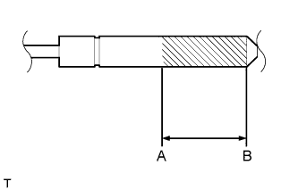

ЗАДНЕЕ СИДЕНЬЕ № 1 В СБОРЕ (для моделей с опускаемым сиденьем раздельного типа 60/40 с левой стороны) > СНЯТИЕ С ЭКСПЛУАТАЦИИ |
| 1. УТИЛИЗАЦИЯ СТОЙКИ ЗАДНЕГО СИДЕНЬЯ В СБОРЕ |
Зажмите стойку сиденья в тисках в горизонтальном положении с выдвинутым штоком поршня.
|  |
Надевайте защитные очки. Ножовкой медленно сделайте разрез на участке между точками A и B, как показано на рисунке, и выпустите газ.
| Параметр / Устройство | Заданные условия |
| A - B | 80 мм (3,15 дюйма) |